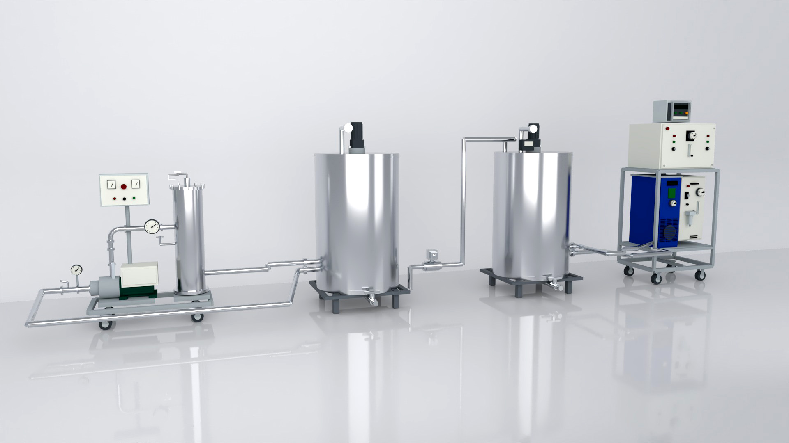
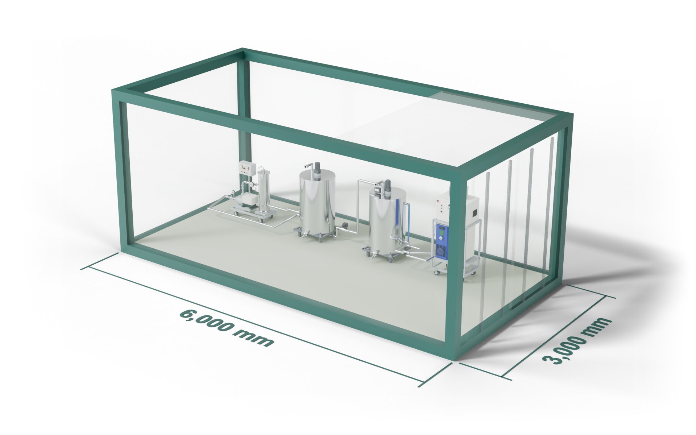

염수 상태 확인
절임 품목과 염수의 상태, 사용·배출 흐름을 살핍니다.
확인할 내용
생산 품목 · 염수 상태 · 사용 흐름
기술 개발에 참여하고,
현장의 관리로 이어갑니다.

EQUIPMENT & BRINE CARE
와텍은 절임염수 재활용 기술 개발에 참여하고, 절임 공장에 재활용 설비를 공급합니다. 김치·절임배추 제조 현장의 염수 상태와 운영 조건을 바탕으로 도입 구성과 관리 방향을 함께 정리합니다.
규모별 설치비와 경제성 계산 ↗절임 품목과 염수의 상태, 사용·배출 흐름을 살핍니다.
확인할 내용
생산 품목 · 염수 상태 · 사용 흐름
버블 발생·다단 챔버의 부상분리 구성을 바탕으로 현장에 필요한 처리와 재사용 조건을 검토합니다.
검토할 내용
처리 목적 · 운전 조건 · 기존 설비
후단 처리·계측·염도 보정·운전 제어·세척 등 필요한 관리 범위를 현장 조건에 맞춰 정리합니다.
함께 정할 내용
관리 항목 · 점검 방향 · 지원 범위
COMPACT INSTALLATION / X-RAY VIEW
공간은 간결하게.
내부 구성은 한눈에.
장비 모델을 3×6m 컨테이너에 배치한 컷어웨이 시각화입니다. 내부의 200L 처리 탱크 두 기는 장비에 포함되어 있으며, 외부 원수·저류 탱크는 표시하지 않았습니다.
컨테이너 외측 6×3×2.6m, 문과 통로는 시각화 가정입니다. 실제 설치 가능 여부는 반입·정비 동선, 바닥 하중 및 현장 규격 확인 후 판단합니다.

FROM THE FIELD
거품으로 오염물을 분리하는 과정과 처리 경과를 현장 사진으로 살펴보세요.


사진은 해당 시료와 촬영 시점의 모습입니다. 외관만으로 위생 안전성이나 재사용 적합성을 판단하지 않으며, 염도·탁도·냄새·pH·미생물·잔류오존 등 필요한 항목을 확인합니다.
절임염수 재활용 기술 개발에 참여하며, 재활용 설비 공급과 염수 상태·공정·운영 검토를 통해 현장에 필요한 지원을 함께 정리합니다.
생산 품목, 염수 사용 방식, 기존 설비와 현재 불편한 점을 알려주시면 됩니다. 확인된 내용부터 차례로 정리할 수 있습니다.
현장의 상황부터 함께 정리합니다.
절임염수 상담 준비하기